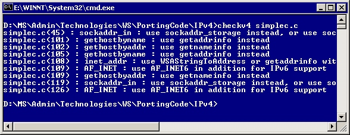
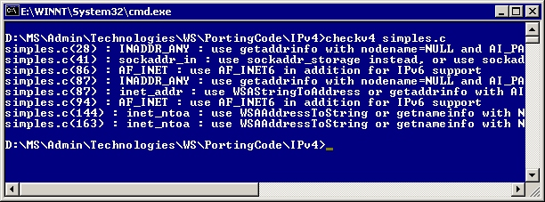

[!IMPORTANT] The Checkv4.exe utility doesn't ship in the Windows Software Development Kit (SDK) for Windows 8, nor in later versions of the Windows SDK.
The Checkv4.exe utility is designed to provide you with a code porting partner; a utility that steps through your code base with you, identifies potential problems or highlights code that could benefit from IPv6-capable functions or structures, and makes recommendations. With the Checkv4.exe utility, the task of modifying an existing IPv4 application to support IPv6 becomes much easier.
The Checkv4.exe utility is installed as part of the Microsoft Windows Software Development Kit (SDK) released for Windows Vista and later SDKs (up to, but not including, the Windows Software Development Kit (SDK) for Windows 8).
An earlier version of the Checkv4.exe utility with more limited features was also made available as part of the earlier Microsoft IPv6 Technology Preview for Windows 2000.
The following sections describe how to use the Checkv4.exe utility, then explain the recommended approach for modifying an existing IPv4 application to support IPv6.
The Checkv4.exe utility is straightforward. Simply execute Checkv4.exe at the command line with the name of the file you want to check as the parameter. Checkv4.exe parses the file and provides feedback as to where IPv6 porting issues exist in that file. Placing the Checkv4.exe into your computer's path makes running the Checkv4.exe utility from anywhere in your source code directory structure much easier. For example, placing Checkv4.exe into %windir% enables you to launch Checkv4.exe from any directory on your computer without including its path.
Issue the following command at the command prompt to parse the file Simplec.c:
Checkv4 simplec.c
Note that some of the recommendations made by the Checkv4.exe utility require structures available only in recent versions of the Ws2tcpip.h header file, such as the SOCKADDR_IN6 structure. These header files are included in the Windows SDK released for Windows Vista and later. These header files are also included in the earlier Platform Software Development Kit (SDK) released for Windows Server 2003.
The following screen shot displays the results of using the Checkv4.exe utility on the Simplec.c file included in Appendix A:

The following screen shot displays the results of using the Checkv4.exe utility on the Simples.c file, which is also included in Appendix A:

There is a recommended procedure associated with adding IPv6 capability to applications. Following this sequence is beneficial, because it enables developers to ensure that all steps necessary to modify an existing IPv4 application to support IPv6 are taken. Certain applications may require more extensive attention to one of these sequences; for example, a system service would likely have less user interface issues than a graphical file transfer program (FTP).
To modify IPv4 applications to support IPv6
Fix structures and declarations to enable IPv6 and IPv4 compatibility.
Modify function calls to take advantage of IPv6-enabled functions, such as the getaddrinfo and getnameinfo functions.
Review source code for the use of hard-coded IPv4 addresses such as the loopback address, or the use of other literal strings.
Perform a thorough review of the user interface, including informational dialog boxes. Give thought to whether it is appropriate for IPv6-enabled applications to specify or provide IP-address based information.
Determine whether your application relies on underlying protocols, such as RPC, and make appropriate programmatic changes to handle IPv6 addresses.
Use the compile-time flag IPV6STRICT when compiling applications on Windows XP and later. This flag results in incompatible code failing to compile, as follows:
Windows Sockets 1.x applications with incompatible code fail to compile and return the error message "WINSOCK2 Required."
Windows Sockets 2.x applications with incompatible code cause a compile time error for each instance of incompatible code. An error message is generated in the following format:
[file name] ([line number]) : [error message] '[symbol]_IPV6INCOMPATIBLE'
For example:
sample.c(8) : error C2065: 'gethostbyaddr_IPV6INCOMPATIBLE' : undeclared identifier
Â
Â